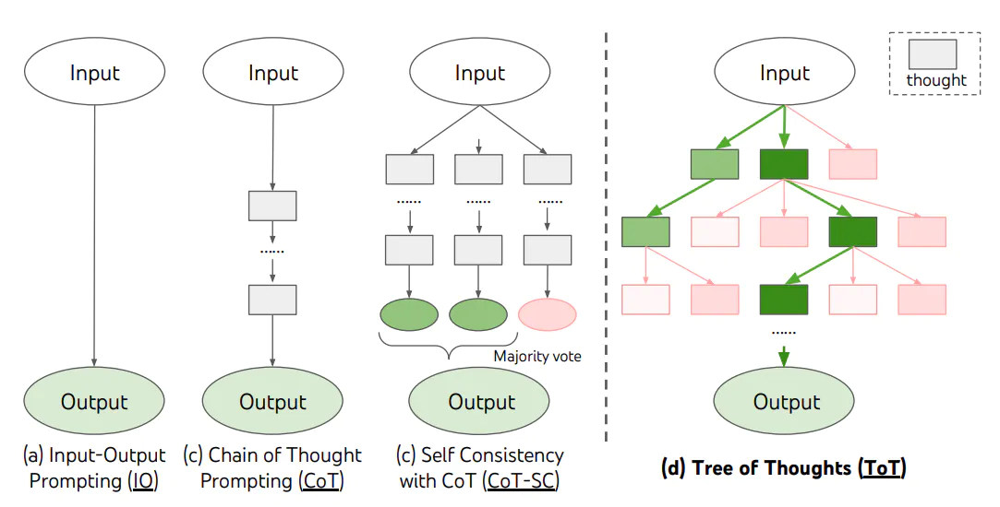

思维链（CoT）
思维链是人们用户摸索出来的，设计者的目的为了保留历史对话提高用户的使用体验。下面是对话列表实现chat对话的历史记录保留。
session = [{"role": "system","content": """
你是一个手机流量套餐的客服代表，你叫小瓜。可以帮助用户选择最合适的流量套餐产品。可以选择的套餐包括：
经济套餐，月费50元，10G流量；
畅游套餐，月费180元，100G流量；
无限套餐，月费300元，1000G流量；
校园套餐，月费150元，200G流量，仅限在校生。
"""}]
def get_completion_chat(prompt, model="gpt-3.5-turbo"):
session.append({"role": "user", "content": prompt})
response = client.chat.completions.create(
model=model,
messages=session,
temperature=0, # 模型输出的随机性，0 表示随机性最小
)
msg = response.choices[0].message.content
session.append({"role": "assistant", "content": msg})
return msg
get_completion_chat("有没有土豪套餐？")
get_completion_chat("多少钱？")
get_completion_chat("给我办一个")
print(json.dumps(session, indent=4, ensure_ascii=False)) # 用易读格式打印对话历史
后来，有学者发现chat模型的一步一步引导思考（思维链）可以提高模型能力。有人在提问时以「Let’s think step by step」开头，结果发现 AI 会自动把问题分解成多个步骤，然后逐步解决，使得输出的结果更加准确。
思维链的原理：
- 让 AI 生成更多相关的内容，构成更丰富的「上文」，从而提升「下文」正确的概率
- 对涉及计算和逻辑推理等复杂问题，尤为有效
自洽性（Self-Consistency)
- 同样 prompt 跑多次
- 通过投票选出最终结果
- 就像我们做数学题，要多次验算一样。对抗”幻觉“的手段。
思维树（Tree-of-thought，ToT）
- 在思维链的每一步，采样多个分支
- 拓扑展开成一棵思维树
- 判断每个分支的任务完成度，以便进行启发式搜索
- 设计搜索算法
- 判断叶子节点的任务完成的正确性
业务场景举例：指标解读，项目推荐并说明依据
小明 100 米跑成绩：10.5 秒，1500 米跑成绩：3 分 20 秒，铅球成绩：12 米。他适合参加哪些搏击运动训练。先判断速度、耐力、力量三方面素质如何（树的第一层），方面素质达标后能参加哪些运动（树的第二次），每个运动其他素质达标后则说明适合该项运动（output）。
def performance_analyser(text):
prompt = f"{text}\n请根据以上成绩，分析候选人在速度、耐力、力量三方面素质的分档。分档包括：强（3），中（2），弱（1）三档。\
\n以JSON格式输出，其中key为素质名，value为以数值表示的分档。"
response = get_completion(prompt)
return json.loads(response)
def possible_sports(talent, category):
prompt = f"需要{talent}强的{category}运动有哪些。给出10个例子，以array形式输出。确保输出能由json.loads解析。"
response = get_completion(prompt, temperature=0.8)
return json.loads(response)
def evaluate(sports, talent, value):
prompt = f"分析{sports}运动对{talent}方面素质的要求: 强（3），中（2），弱（1）。\
\n直接输出挡位数字。输出只包含数字。"
response = get_completion(prompt)
val = int(response)
print(f"{sports}: {talent} {val} {value>=val}")
return value >= val
def report_generator(name, performance, talents, sports):
level = ['弱', '中', '强']
_talents = {k: level[v-1] for k, v in talents.items()}
prompt = f"已知{name}{performance}\n身体素质：{_talents}。\n生成一篇{name}适合{sports}训练的分析报告。"
response = get_completion(prompt, model="gpt-3.5-turbo")
return response
name = "小明"
performance = "100米跑成绩：10.5秒，1500米跑成绩：3分20秒，铅球成绩：12米。"
category = "搏击"
talents = performance_analyser(name+performance)
print("===talents===")
print(talents)
cache = set()
# 深度优先
# 第一层节点
for k, v in talents.items():
if v < 3: # 剪枝
continue
leafs = possible_sports(k, category)
print(f"==={k} leafs===")
print(leafs)
# 第二层节点
for sports in leafs:
if sports in cache:
continue
cache.add(sports)
suitable = True
for t, p in talents.items():
if t == k:
continue
# 第三层节点
if not evaluate(sports, t, p): # 剪枝
suitable = False
break
if suitable:
report = report_generator(name, performance, talents, sports)
print("****")
print(report)
print("****")


...